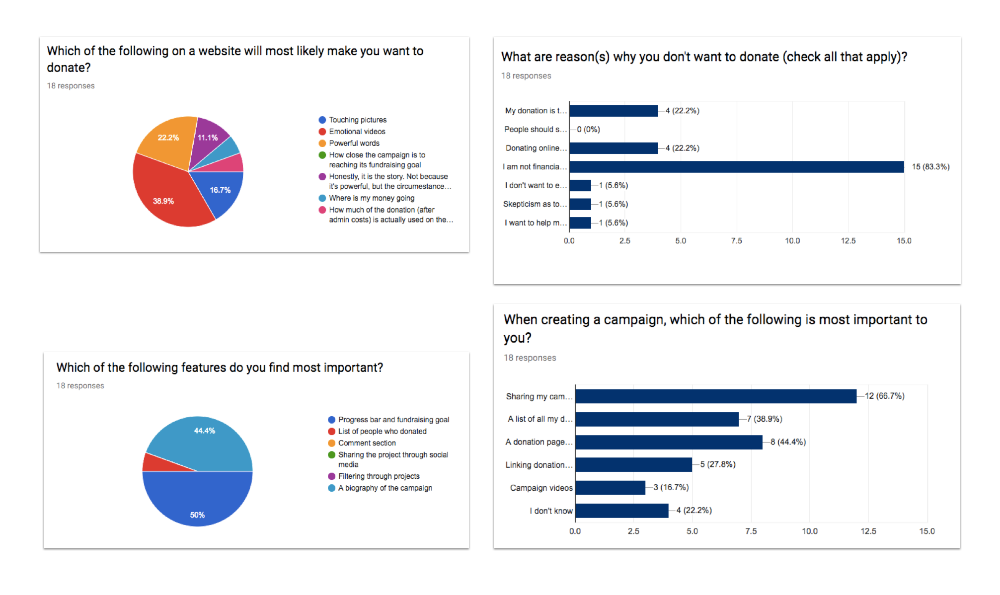
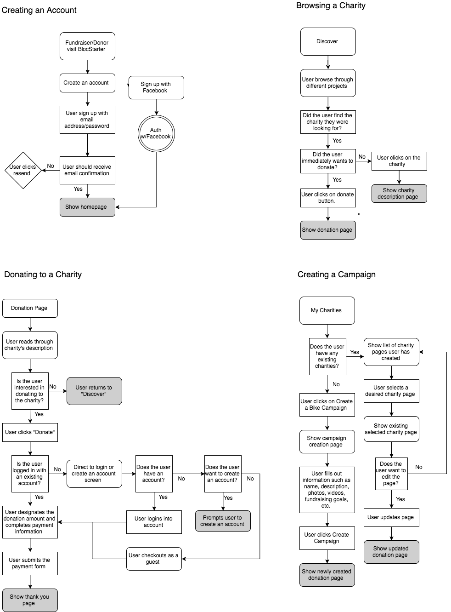

RIDESTARTER
A crowdfunding web application for organizations and individuals looking to either raise funds or donate to charity bike rides.
A crowdfunding web application for organizations and individuals looking to either raise funds or donate to charity bike rides.
Ridestarter is a crowdfunding website application for organizations and individuals looking to either raise funds or donate to charity bike rides across the world. Users can choose to create a bike campaign, supporting specific causes or browse through the different bike charities that are offered.
There are a lot of existing crowd-sourced fundraising web applications such as Kickstarter, GoFundme, and Indiegogo. However, many of these applications cater towards personal or general projects. When pertaining to charity bike rides, a well-designed solution hasn't been created.
The goal of Ridestarter is to centralize charity bike rides across the world and allow users to crowd-source for ride projects. In addition to attracting the cyclist community, Ridestarter allows donors and fundraisers to come together in supporting charity rides for causes they care about. View the clickable prototypes here.
At this initial stage, it was important to gain a better understanding of users' behavior of donating to a charity or spearheading a fundraiser. The survey was aimed towards a group of people who have made donations, created fundraiser projects, participated in charity bike ride and also users who have neither fundraised or donated. Click here to view the survey responses
In addition to the survey, I also conducted user interviews on people who have been on charity bike rides and have experienced through the fundraising process. These are my findings:
The data revealed the users' attitudes and motives towards donating. Based from the survey, there seems to be major theme of users skeptical of whether they're making an impact through donation. From this inference, It's also safe to conclude that users typically make a one time donation to friends or family. These results were important in deciding not only the features of Ridestarter, but also what is necessary in order to create a successful and trusting crowdfunding application.
I analyzed four different crowdfunding companies in order to find out more about how they operate, their strengths/weaknesses, features, and differentiators. Based from the analysis, it was apparent that almost all crowdfunding sites strive for similiar features - progress meter and donation goals. Because Ridestarter is a charity bike crowdfunding source, it's important that the application contains features unique to charity bike rides as well as some of the important crowdfunding elements such as a progress bar and fundraising goal. You can take a closer look of the competitive analysis here.
After conducting user interviews and compiling the survey, I created three user personas to reflect both the fundraiser and donor perspective. My goal was to develop empathy for the users and how they will interact with the application.


Based on the user research, I finalized four user stories that I believe are important for users to navigate through their goals in Ridestarter: Creating an Account, Browsing a Charity, Donating to a Charity, and Creating a Campaign. This detaied information architecture serves as a template for the creation of the site. Click here to view the online user flow.
With Ridestarter being a crowdfunding application, evoking trust is one of the most important facets in getting users to use the site. Green is used as the primary color for Ridestarter because not only green associates with money flow, but also promotes a love for nature and foliages, which are all presented during a rider's journey. After careful consideration about the logo, I went with the less is more principle and used a typeface (Noto Sans) and a bike logo to evoke both professionalism and easy identification.

In order to show potential users how the application is supposed to function and be built, I designed the low-fidelity wireframes in Balsamiq based from the user stories. It was also important to remember to design from both the donators and fundraisers' experience. Given that mind, I created wireframes from the fundraiser's perspective where they are able to manage and edit their projects.

Uesr testing was important to either gather design feedback or any errors that user experienced. For this process, I conducted both a contextual interview on four different users and an unmoderately usability testing on usertesting.com to get feedback on the clickable prototypes that I created in InVision. These are some of the most important guiding questions that I asked during the testing as they went through the website:

With the insights gained from user research and usability testing, Ridestarter was solidify with multiple sought out iterations, transforming it into high-fidelity prototypes. You can check out Ridestarter's interactive prototype here.

If given more time, I would love the opportunity to spend more time doing usability testing early during the low-fidelity wireframing phase. Psychologically, I feel less wedded to low-fidelity prototypes and am more likely to make the changes on the user experiences. On the contrary, it’s omre difficult to give up or add a design element once I have already invest in a design.
Testers were overall impressed with the design structure and content. Listening closely to users during the interview process helped me empathize with their motives and thought process. Additionally, analyzing user feedback and translating them into mockups is always enjoyable. Based on the feedback, trustworthiness is one of the most important aspect to getting users to use an application. Asking questions such as “Does this page follows the current trend in modernizing the style or buttons?” This could always be improved in any of my future design.
Like my project and want to talk? Send me a message!